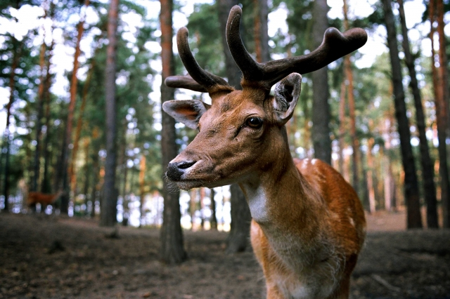

| シカとは |
ニホンジカ、トナカイ、ヘラジカなどが属しており、約16属36種が世界中の森林に生息しています。
シカの蹄には、ヤマビルが穴をあけて寄生することが知られており、ヤマビルの生息域の拡大にシカが関与していることが疑われています。
シカの名所として奈良公園・若草山がありますが、当地でのシカは「奈良の鹿」として天然記念物に指定されています。 |
| アンサー① |
草食性で4つに分かれた胃を持ち、（ 反芻 ）による消化を行います。 |
|
|
口で咀嚼し胃に送って部分的に消化した後、再び口に戻して咀嚼する過程を反芻といいます。
|
| アンサー② |
シカの( 革 )は通気性や保温性に優れ、手袋や衣料に用いられます。 |
|
|
鹿の皮は細かい繊維が緻密に絡み合った独特な構造をしており柔らかで滑らかです。
|
| アンサー③ |
シカはオスのみツノを持ちますが、( トナカイ )はオスとメス共にツノを持ちます。 |
|
|
ウシ科の動物のツノは骨の芯を角質が覆っており、生え替わらずに一生伸び続けます。
|
| アンサー④ |
シカのツノは( 骨組織 )からなり、毎年生え替わります。 |
|
|
生えたばかりの角は柔らかく表皮に覆われてますが、秋季の骨化した角は固く、表皮は脱落します。
|
| アンサー⑤ |
シカによる（ 交通被害 ）は全国共通ですが、標識は国によって異なります。 |
|
|
群れのいる地域や生息が確認されている地域では交通標識があり、衝突事故への注意を喚起しています。
エゾシカは自動車を怖がらず、クラクションを鳴らしても逃げなかったり、路上で立ち止まる性質があります。
|
| アンサー⑥ |
日本では鹿肉のことを( もみじ )と呼び、様々な肉料理に調理されます。 |
|
|
シカが秋の季語であることから紅葉を連想したもの、あるいは花札の「鹿にもみじ」の絵札から連想したものとされています。
|